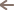

החומרים
אופן ההכנה
1. שוקלים את הסוכר ישירות לקערת התרמומיקס וטוחנים 10 שניות במהירות 10
2. מוסיפים את קוביות האבטיח הקפואות וקוצצים 30 שניות במהירות 10
3. מוסיפים את מיץ הלימון, המים והוודקה ומערבבים 30 שניות במהירות 6
4. שומרים בקירור!
- 2/6 דפדפו בין התמונות

- 

הצעת הגשה: מעל עלים טריים.
שלח לנו מתכון!